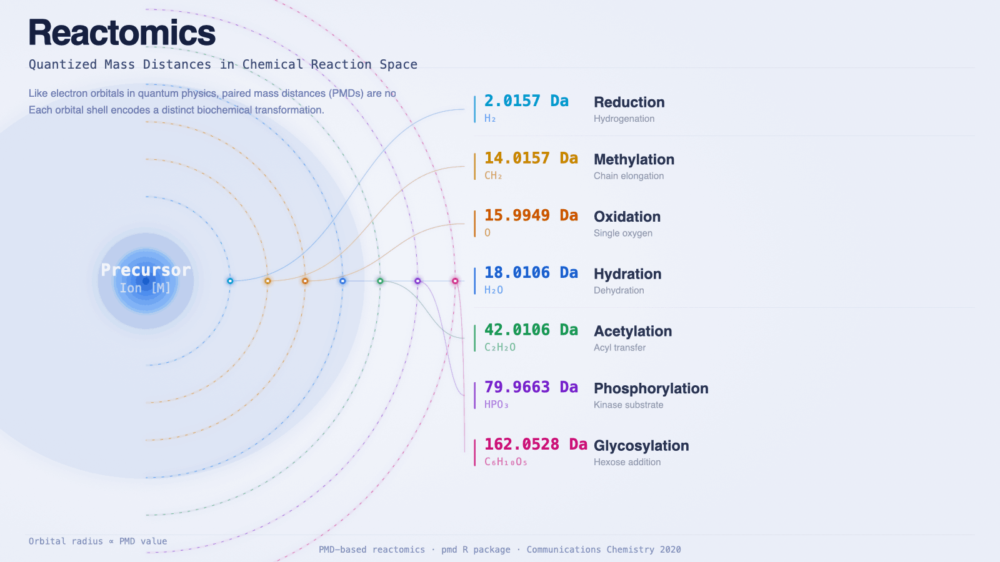

反应组学
反应组学（Reactomics）是以化学反应为研究对象的系统性学科——具体而言，通过质谱数据中观测到的配对质量距离（PMD，Paired Mass Distance）来识别并绘制生物体、环境及化学体系中的反应网络。该概念由于淼等人在2020年发表于 Communications Chemistry 的原始论文中正式提出：同一质谱数据集中两个离子之间的精确质量差，直接编码了连接它们的化学反应信息。
核心思想简单而有力：两个分子之间固定的质量差对应一类特定的化学反应或生物转化。通过系统梳理非靶向代谢组学数据中的配对质量距离，无需预先知道化合物的身份，即可重建样品中活跃的反应网络。

本页收录与反应组学及PMD分析相关的文献，每月自动更新。
为什么反应组学重要
传统代谢组学工作流程通过鉴定化合物并将其丰度与表型关联来开展研究。这种方法固然有价值，但它将代谢物视为独立实体，而非反应网络中的节点。实际上，代谢物经由酶促反应和自发化学反应不断产生、消耗和转化——它们之间通过反应相互连接。
反应组学通过将反应关系作为研究对象来弥补这一不足。与其问"哪些代谢物在组间存在差异"，反应组学更关注"哪些反应在组间存在差异"以及"样品中活跃的反应网络是什么"。这一转变带来了几个重要优势：
- 基于反应的分析对注释缺口更具鲁棒性——PMD可针对任意峰对计算，无论峰是否已被注释。
- 反应具有化学可解释性——PMD值2.0157（H₂）意味着还原反应；14.0157（CH₂）意味着甲基化或碳链延伸。无需查找表即可读懂网络。
- 反应网络可跨条件、跨物种、跨样品类型进行比较，而单纯的代谢物列表往往难以做到。
- 该方法与生化通路数据库（KEGG、HMDB反应、Reactome）天然契合，同时在注释不完整时仍可使用。
配对质量距离与化学反应
PMD概念
配对质量距离（PMD）是同一质谱数据集中检测到的两个离子之间的精确质量差。例如：
| PMD (Da) | 分子式变化 | 反应类型 |
|---|---|---|
| 2.0157 | H₂ | 还原 / 加氢 |
| 14.0157 | CH₂ | 甲基化、碳链延伸 |
| 15.9949 | O | 氧化（单氧） |
| 17.0027 | OH | 羟基化 |
| 18.0106 | H₂O | 水合 / 脱水 |
| 28.0313 | C₂H₄ | 乙基化 |
| 42.0106 | C₂H₂O | 乙酰化 |
| 79.9663 | HPO₃ | 磷酸化 |
| 162.0528 | C₆H₁₀O₅ | 己糖加成（糖基化） |
当两个离子之间的PMD与已知反应匹配时，它们即为该反应底物—产物对的候选。当数据集中发现大量此类配对时，即可推断该反应在所研究的生物或化学体系中处于活跃状态。
PMD网络
由具有化学意义的PMD连接的离子对构成PMD网络。节点为离子（检测到的m/z值），边以PMD（即反应类型）为标注。PMD网络以单一数据结构汇总了样品中完整的反应图景。
PMD网络的关键特性：
- 可从任意非靶向LC-MS数据集计算，无需注释。
- 节点的度分布反映哪些化合物代谢活性最高。
- 比较不同条件下的PMD网络，可揭示哪些反应被上调或下调，类似差异表达分析。
- 子网络通常对应已知生化通路，为生物学解读提供路径。
PMD网络通过pmd R包中的getchain()函数构建，该函数通过追踪连续PMD边将离子链接成反应链。
反应层定量：反应组学之所以是"组学"
反应组学最关键、也是目前最被低估的特性，是在不做化合物鉴定的前提下直接对反应做定量。文献里大量工作止步于把 PMD 拿来构建反应网络，然后通过节点反查物质鉴定来解读结果——这有用，但绕回去之后整个分析又被绑回到鉴定瓶颈上，本质上还是传统代谢组学加了一层网络可视化。
反应组学一开始就是为了跳过这个瓶颈：分析的最小单元是反应，不是分子。某个特定的 PMD——比方 15.9949 Da 的氧加成——在一组非靶向数据里可能出现成千上万次，对应几百对底物–产物离子对。每一次出现都是这个反应正在发生的一次观测。把所有出现合在一起看它在样品间的活跃度，就直接量化了氧化、甲基化、糖基化这些反应的整体强度，全程不需要任何化合物名单。这才是它配得上叫做"组学"的原因——反应就是分析对象本身。
pmd R包中的getreact()函数实现了这个思路。对于每一对被指定 PMD 连起来的离子，它先看这一对在样本间的行为，然后分两种量化模式处理。
静态反应：底物和产物同涨同落
有时一个反应的底物和产物在样本间是一起涨落的——比值大致不变，但绝对强度同步变化。生化上对应的是酶不是限速步骤：转化效率稳定，样品间真正变化的是上游供应量或下游消耗量。
这种"静态"反应里最有信息量的定量是总通量——底物强度加产物强度。和大就表示整个底物–产物池子大，上游供应足。样品间这个和的差异，反映的是这个反应的上游/下游被怎样调控。
动态反应：底物和产物各走各的
另一种情况是底物和产物不一起变。比值从一个样品到另一个样品在变。这通常意味着酶本身才是被调控的部分：它的活性或丰度在不同样品里不一样，所以即使底物水平相近，转化效率也不同——底物在酶被抑制时积累，产物在酶被诱导时升高。
对这类"动态"反应，有意义的定量是比值——把更稳定的那个峰放在分子（当作内参），更不稳定的那个放分母。这样得出的每样品比值，反映的是变动那一端相对参考端的变化，把"酶活动"从"样本水平丰度漂移"中剥离出来。
两种调控模式，两种读数
静态和动态两种模式合起来，刚好覆盖了一个反应在定量上能体现生物学调控的两条基本路径：
- 静态 PMD ⇒ 上游/下游调控。 酶稳定运行，变的是底物供应或产物去路。用强度求和定量。
- 动态 PMD ⇒ 酶层调控。 酶活是变量，底物供应大致不变。用比值定量。
概念上跟代谢控制分析（MCA）很像，但完全是从非靶向 LC-MS 数据里直接读出来的——不需要动力学测量、不需要同位素标记、不需要化合物鉴定。
为什么这才是反应组学最值得推的部分
PMD 网络作为整理非靶向 MS 数据的工具，得到了应有的关注。但只构建网络本身并没有把分析从鉴定中解放出来：想要解读一个节点，分子终归要被命名。反应层定量才是反应组学区别于"又一种网络方法"的地方——反应本身携带定量生物学信息，哪怕反应两端的分子始终是未知的。把这层反应定量当作真正的分析对象，而不只是通往化合物鉴定的中间步骤，才是反应组学最值得继续往前推的部分。
方法与工具
PMD计算
PMD分析需要高精度质量测量，通常来自Orbitrap或Q-TOF等高分辨率质谱仪器。区分同重素反应（如CO，27.9949 Da vs. C₂H₄，28.0313 Da）所需质量精度约为5 ppm或更优。
工作流程如下：
- 峰检测 — 从原始LC-MS数据中提取含精确m/z值的峰列表（如使用XCMS、MZmine等工具）。
- PMD计算 — 计算所有成对质量差，筛选与已知化学反应匹配的PMD。
- 网络构建 — 使用
getchain()构建PMD网络，将离子链接成反应链。 - 定量分析 — 使用
getreact()量化每个样本中各反应的活跃度。静态反应用强度求和（底物+产物），动态反应用比值（稳定峰/变动峰）定量。详细原理见上面"反应层定量"一节。
pmd R包
pmd包提供了反应组学分析在R中的完整实现：
getpaired()— 识别由特定PMD连接的离子对getchain()— 通过追踪离子列表中的反应链构建PMD网络getreact()— 量化各样本中反应活性，method = "static"（强度求和，适用于上游/下游调控反应）或method = "dynamic"（稳定峰/变动峰比值，适用于酶层调控反应）；输出"反应×样本"矩阵供统计比较getstd()— 提取同位素相关离子对用于质量控制- 可视化函数，用于网络图和反应热图
该包支持正负离子模式数据，并与标准代谢组学工作流程集成。
PMD数据库与反应列表
反应组学依赖与已知生化反应对应的PMD参考列表。pmd包内置了多个数据集：
keggrall— 源自KEGG酶催化反应的PMD，含反应方程式和KEGG IDhmdb— 来自HMDB人类代谢物条目的高频PMDomics— 整合多个数据库的反应PMD汇总表，涵盖主要组学反应sda— 亚结构差异、离子替换和反应的常见PMDMaConDa— 质谱污染物PMD，用于背景干扰核查
源内反应与独立峰选择
源内反应——加合物形成、源内碎裂和同位素模式——同样会在LC-MS数据集中的离子对之间产生特征性质量差。这些属于分析仪器产生的伪影而非生物反应，但遵循相同的PMD逻辑：两个离子之间固定的质量差编码了连接它们的特定过程。
这一发现是 globalstd 算法的核心依据，该算法由Yu、Olkowicz与Pawliszyn（2019）提出，并在pmd包中实现。globalstd 的关键特点是数据驱动：它不依赖预定义的加合物列表，而是从当前数据集中发现哪些质量差真正普遍存在，并以此为据定义冗余。算法分三步执行：
- 保留时间聚类 — 将共流出离子归为一组，认为它们来源于同一化合物。
- 数据驱动的高频PMD检测 — 在每个RT组内计算成对质量差。在多个组中高频出现的PMD被推断为广泛存在的加合物与中性丢失（如Na/H交换、¹³C同位素、常见溶剂加合物）。由于每个发生同一源内反应的化合物都贡献相同的PMD，这些质量差会积累出异常高的计数——而这一信号完全源自数据本身。
- 独立峰筛选 — 利用发现的高频PMD，每个化合物簇保留一个代表性离子，去除冗余的加合物、同位素峰和源内碎片。
最终输出一套无冗余的独立离子集合，在保留完整化学多样性的同时消除峰的多重性。无需预先了解数据集中会出现哪些加合物。
药物代谢应用
药物代谢产生一组可预测的生物转化产物。I相反应（氧化、还原、水解）和II相反应（结合反应）各对应特定PMD。反应组学支持非靶向药物代谢谱分析：给定来自药物处理生物体的样品，PMD网络可识别发生了哪些I相和II相转化，无需预先指定目标代谢物。
环境转化应用
环境样品包含经历生物和非生物转化的复杂化学物质混合物。通过计算水体、沉积物或生物组织样品的PMD网络，可在不了解母体化合物身份的情况下识别活跃的转化反应。
内源性代谢组学应用
在人类和动物代谢组学中，反应组学将测量到的代谢物丰度与产生它们的酶活性相连。血浆或尿液样品的PMD网络反映了生物体的代谢状态——哪些合成代谢和分解代谢反应最为活跃。
每月文献集
以下为每月从PubMed收录的反应组学及PMD分析相关新文献。
2026-04
- Role of oxygenation reactions in chlorinated disinfection byproduct formation during vacuum UV/chlorine treatment of reclaimed water. Water research （2026-04）
全部文献
收录自原始论文（2020年）至今所有使用或扩展PMD反应组学的文献，每月更新。
方法与工具
- Accurate detection and high throughput profiling of unknown PFAS transformation products for elucidating degradation pathways. Water research (2025) — Combines FT-ICR MS with PMD network analysis for high-throughput profiling of PFAS transformation products at mDa resolving power, revealing that UV treatment causes chain shortening while plasma treatment generates both chain-shortening and oxygen-rich chain-lengthening products.
- DNEA: an R package for fast and versatile data-driven network analysis of metabolomics data. BMC bioinformatics (2024) — Presents the DNEA R package for differential network enrichment analysis of metabolomics data, constructing biological networks via partial correlations and performing enrichment testing applicable to exogenous, secondary, and unknown compounds beyond traditional pathway databases.
- A multiplatform metabolomics/reactomics approach as a powerful strategy to identify reaction compounds generated during hemicellulose hydrothermal extraction from agro-food biomasses. Food chemistry (2023) — Combines GC-MS, liquid chromatography, and reactomics in a multiplatform approach to characterize degradation compounds formed during hydrothermal hemicellulose extraction from hazelnut shells, demonstrating PMD-based reaction tracking in food chemistry contexts.
- Untargeted high-resolution paired mass distance data mining for retrieving general chemical relationships. Communications chemistry (2020) — The original reactomics paper. Introduces the PMD concept: high-frequency mass differences in untargeted MS data directly encode active chemical reactions, enabling reaction-network reconstruction without compound identification.
- A Novel LC-MS Based Targeted Metabolomic Approach to Study the Biomarkers of Food Intake. Molecular nutrition & food research (2020) — Uses PMD networking combined with parallel reaction monitoring to selectively extract and identify 76 wheat phytochemical-derived metabolites in human urine, establishing a quantification platform for biomarkers of whole grain wheat intake without enzymatic hydrolysis.
源内反应与独立峰选择
- Reproducible untargeted metabolomics workflow for exhaustive MS2 data acquisition of MS1 features. Journal of cheminformatics (2022) — Introduces PMDDA (PMD-dependent analysis), a workflow that removes redundant MS1 peaks using co-elution PMDs then exports a non-redundant precursor ion list for pseudo-targeted MS2 collection, yielding more annotated compounds and molecular networks than CAMERA or RAMClustR.
- Metabolic profile of fish muscle tissue changes with sampling method, storage strategy and time. Analytica chimica acta (2020) — Applies globalstd algorithm and structure/reaction directed analysis to investigate how sampling method and storage conditions affect fish muscle metabolomics profiles, finding butylation-series metabolites stable during storage and demonstrating in vivo SPME superiority for unstable metabolites.
- Structure/reaction directed analysis for LC-MS based untargeted analysis. Analytica chimica acta (2018) — Introduces the globalstd algorithm for data-driven independent ion selection. High-frequency PMDs among co-eluting peaks reveal widespread adducts and neutral losses; one representative ion per compound is retained, eliminating redundancy without a predefined adduct list.
PMD网络
- Frequency-based paired mass distance method revealed the transformation pathway selection of organic compounds during mineralization treatment. Water research (2025) — Uses frequency-based PMD analysis to reveal which transformation pathways are preferentially selected during organic matter mineralisation, linking reaction selectivity to treatment conditions.
- Microbial Roles in Dissolved Organic Matter Transformation in Full-Scale Wastewater Treatment Processes Revealed by Reactomics and Comparative Genomics. Environmental science & technology (2021) — Pairs reactomics with comparative genomics. PMD-based reaction networks identify which microbial guilds drive specific dissolved-organic-matter transformations across full-scale wastewater treatment stages.
- Metabolism of SCCPs and MCCPs in Suspension Rice Cells Based on Paired Mass Distance (PMD) Analysis. Environmental science & technology (2020) — First application of PMD network to biotransformation tracing. Uses PMD-linked ion chains to map chlorinated paraffin metabolism in rice cells, demonstrating that reaction pathways can be recovered from untargeted data without compound annotation.
环境转化应用
- Insights into Contaminant Composition Variations and Reactomics during Wastewater Treatment Processes Based on Nontargeted Analysis and Paired Mass Distance. Environmental science & technology (2026) — Nontargeted PMD analysis of paired influent-effluent samples from 11 WWTPs shows that methylation/demethylation are the most conserved transformation reactions, with high-frequency PMDs capturing carbon-related polarity changes across treatment processes.
- Real-world aged microplastics exacerbate antibiotic resistance genes dissemination in anaerobic sludge digestion via enhancing microbial metabolite communication-driven pilus conjugative transfer. Water research (2025) — Reactomics network analysis shows that aged microplastics stimulate metabolite turnover of nitrogenous and sulfurous compounds and increase molecular transformation network complexity, promoting antibiotic resistance gene exchange in anaerobic sludge digestion.
- Integrating machine learning, suspect and nontarget screening reveal the interpretable fates of micropollutants and their transformation products in sludge Journal of Hazardous Materials (2025) — Integrates machine learning for non-reference quantification of transformation products with suspect/nontarget screening in activated sludge, identifying 39 parent chemicals and 286 TPs with random-forest-predicted response factors and applying risk-based prioritization.
- Machine learning-enhanced molecular network reveals global exposure to hundreds of unknown PFAS. Science advances (2024) — Develops APP-ID, an automatic PFAS identification platform with an enhanced molecular network algorithm (0.7% false-positive rate vs 2.4–46% for current methods) and a support vector machine for unknown PFAS structure identification, detecting 39 previously unreported environmental PFAS.
- Unveiling intricate transformation pathways of emerging contaminants during wastewater treatment processes through simplified network analysis Water Research (2024) — Develops simplified network analysis (SNA) to uncover transformation pathways of emerging contaminants across 15 Chinese WWTPs, finding (de)methylation and dehydration as the most frequent reactions and identifying 22 transformation products of four anti-hypertensive drugs.
- Synchronous biostimulants recovery and dewaterability enhancement of anaerobic digestion sludge through post-hydrothermal treatment Chemical Engineering Journal (2023)
- Tooth biomarkers to characterize the temporal dynamics of the fetal and early-life exposome. Environment international (2021) — Profiles small molecules from micro-dissected deciduous tooth layers by untargeted metabolomics, annotating 390 compounds across 62 chemical classes and identifying 267 metabolites that discriminate prenatal from postnatal fractions, providing retrospective access to fetal exposures.
- Medium- and Short-Chain Chlorinated Paraffins in Mature Maize Plants and Corresponding Agricultural Soils. Environmental science & technology (2021) — Reports first characterization of MCCP and SCCP bioaccumulation in mature maize plants near a CP production facility, finding most CPs concentrated in tissues with direct airborne exposure and assessing edible risks to humans and livestock.
↳ DOM（天然有机质）转化
- Role of oxygenation reactions in chlorinated disinfection byproduct formation during vacuum UV/chlorine treatment of reclaimed water. Water research (2026) — PMD analysis of FT-ICR MS data reveals that oxygenation (+O) reactions precede and dominate chlorination in disinfection byproduct formation during UV/chlorine treatment, with over 93% of identified precursors undergoing oxygenation before chlorination.
- Transformation process and removal mechanism of DOM based on paired mass distance (PMD) analysis in the multi-stage biological contact oxidation process. Bioresource technology (2026) — PMD network analysis of FT-ICR MS data elucidates DOM transformation in multi-stage biological contact oxidation, linking six key microbial genera to 70 PMDs associated with glycolysis and amino acid metabolic pathways.
- FT-ICR MS and viral metagenomics reveal distinct mechanisms of lysogenic and lytic phage-driven DOM transformations in wastewater at formula-levels Chemical Engineering Journal (2025)
- Microbial Physiological Adaptation to Biodegradable Microplastics Drives the Transformation and Reactivity of Dissolved Organic Matter in Soil. Environmental science & technology (2025) — Combines stable isotope tracing, reactomics, and metagenomics to show that PLA microplastics induce oxidative lignin degradation while PHA promotes microbial anabolism, revealing contrasting DOM transformation pathways driven by different biodegradable plastics.
- Molecular Humification Mechanisms of Dissolved Organic Matter during Maize Straw Composting Enhanced by Humus Soil Biomaterial: Paired-Molecule Mass Difference Reactomics Analysis Based on FT-ICR MS. Journal of agricultural and food chemistry (2025) — Paired-molecule mass difference reactomics via FT-ICR MS identifies three molecular humification pathways—phenol-protein reaction, polyphenol self-condensation, and Maillard reaction—during humus-enhanced maize straw composting, with N-containing molecules showing the highest reactivity.
- Decoding periodate-driven phototransformation of dissolved organic matter in sunlit waters: Multidimensional property shifts and molecular network reconfiguration. Water research (2025) — Combines FT-ICR MS-based PMD network analysis with interpretable machine learning to show that residual periodate from advanced oxidation enhances DOM photoreactivity 1.4–3.6-fold and promotes aromatic fragmentation via oxygenation-dominated reactions.
- Identifying the impacts of photochemical and biological processes on wastewater effluent organic matter in receiving water using directed paired mass distance Journal of Environmental Chemical Engineering (2025)
- Reaction Sequence of the UV/H2O2 System on the Suwannee River Dissolved Organic Matter with Complex Molecular Composition ACS ES&T Water (2025)
- Wildfire-Derived Pyrogenic Dissolved Organic Matter (pyDOM) Enhances Riverine DOM Reactivities and Nitrogen Metabolisms. Environmental science & technology (2025) — High-resolution MS and substrate-explicit modeling show that wildfire-derived pyrogenic DOM increases refractory aromatic components in river water; reactomics analysis reveals an enhanced potential for microbial oxidative reactions linked to higher nominal oxidation state of carbon.
- MoleTrans: Browser-Based Webtool for Postanalysis on Molecular Chemodiversity and Transformation of Dissolved Organic Matters via FT-ICR MS Environmental Science & Technology Letters (2025)
- Effect of a high Cl– concentration on the transformation of waste leachate DOM by the UV/PMS system: A mechanistic study using the Suwannee River natural organic matter (SRNOM) as a simulator of waste leachate DOM Journal of Hazardous Materials (2025) — Investigates how high chloride concentrations shift DOM transformation mechanisms under UV/PMS treatment, using molecular analysis to reveal competing oxidation pathways and their impact on disinfection byproduct precursor formation.
- Enhanced Release and Reactivity of Soil Water-Extractable Organic Matter Following Wildfire in a Subtropical Forest. Environmental science & technology (2025) — Reactomics analysis of post-wildfire subtropical soil reveals an 8-fold increase in potential DOM reactivity, driven by elevated oxidative enzyme reactions and enrichment of aromatic-compound-degrading microbes, challenging the assumption that fire-altered DOM is less reactive.
- Long-term fertilization promotes the microbial-mediated transformation of soil dissolved organic matter Communications Earth & Environment (2025) — Examines long-term fertilization effects on soil DOM transformation through microbial community analysis and molecular characterization, linking fertilization regimes to shifts in DOM composition and microbial-mediated transformation pathways.
- Photochemical transformation altered coagulation behavior and treatability of dissolved organic matters in water Separation and Purification Technology (2025)
- Unveiling molecular DOM reactomics and transformation coupled with multifunctional nanocomposites under anaerobic conditions: Tracking potential metabolomics and pathways. Chemosphere (2025) — FT-ICR MS-based reactomics and metabolic pathway analysis track DOM transformations in livestock manure anaerobic digestion with metal-doped hydrochar supplements, revealing shifts from highly unsaturated to peptide-like molecules and linking reaction networks to microbial metabolic pathways.
- Network-Based Methods for Deciphering the Oxidizability of Complex Leachate DOM with •OH/O3 via Molecular Signatures Environmental Science & Technology (2025) — Uses PMD-based molecular network analysis to resolve oxidizability signatures of complex landfill leachate DOM under OH radical and ozone treatment, linking specific molecular subclasses to their susceptibility to advanced oxidation processes.
- Enhanced removal of biolabile oxygen-depleted dissolved organic matter by coagulation-adsorption process Improves biological stability of reclaimed water Chemical Engineering Journal (2024)
- Revealing the interplay of dissolved organic matters variation with microbial symbiotic network in lime-treated sludge landscaping. Environmental research (2024) — Reactomics analysis reveals that 0.4 g/g-TS lime dosage optimally promotes sludge stabilization during landscaping by enhancing protein hydrolysis and decarboxylation-driven humification, with microbial community shifts from Aromatoleum to Firmicutes-affiliated genera.
- Complexation with Metal Ions Affects Chlorination Reactivity of Dissolved Organic Matter: Structural Reactomics of Emerging Disinfection Byproducts. Environmental science & technology (2024) — Structural reactomics analysis shows that iron and zinc complexation with DOM alters functional group availability and chlorination reactivity, generating emerging disinfection byproducts with distinct molecular signatures from uncomplexed DOM.
- Inhibitory effect of microplastics derived organic matters on humification reaction of organics in sewage sludge under alkali-hydrothermal treatment. Water research (2024) — FT-ICR MS and PMD analysis demonstrate that microplastic-leached DOM inhibits artificial humic acid formation during alkali-hydrothermal sludge treatment by suppressing condensation of oxygen-rich aromatic molecules, reducing plant growth promotion.
- Deciphering Microbe-Mediated Dissolved Organic Matter Reactome in Wastewater Treatment Plants Using Directed Paired Mass Distance. Environmental science & technology (2023) — Introduces directed PMD (dPMD) analysis that infers substrate-product direction from sequential MS data without formula assignment, revealing conserved first-step reactions that trigger DOM diversification and identifying microbe-enzyme-reaction associations across 12 WWTPs.
- Interpretable Machine Learning and Reactomics Assisted Isotopically Labeled FT-ICR-MS for Exploring the Reactivity and Transformation of Natural Organic Matter during Ultraviolet Photolysis. Environmental science & technology (2023) — Combines deuterium isotope labeling, FT-ICR MS, interpretable machine learning, and PMD network analysis to unravel NOM photoreactivity under UV irradiation, finding CHOS formulas most reactive and hydroxylation dominant for lignin/CRAMs.
- Tracking the transformation pathway of dissolved organic matters (DOMs) in biochars under sludge pyrolysis via reactomics and molecular network analysis. Chemosphere (2023) — Applies FT-ICR MS-based reactomics and molecular network analysis to track sludge biochar DOM transformation under pyrolysis, identifying three-stage cascade reactions and showing that temperatures above 500°C are needed to minimize harmful N-containing byproducts.
- Exploring the Complexities of Dissolved Organic Matter Photochemistry from the Molecular Level by Using Machine Learning Approaches Environmental Science & Technology (2023) — Trains ML models on irradiation data from two estuaries to predict photochemical reactivity of unannotated DOM molecules in five worldwide estuaries, revealing that riverine DOM chemistry largely determines subsequent photodegradation fate.
- Comprehensive understanding of DOM reactivity in anaerobic fermentation of persulfate-pretreated sewage sludge via FT-ICR mass spectrometry and reactomics analysis. Water research (2022) — FT-ICR MS and PMD-based reactomics reveal that persulfate pretreatment of sludge enhances VFA production by modulating DOM molecular compositions through humification-related reactions, beyond the conventional view of improved N-compound decomposition.
- Novel insight into dissolved organic nitrogen (DON) transformation along wastewater treatment processes with special emphasis on endogenous-source DON. Environmental research (2022) — Uses IMS-QTOF MS and PMD-based reaction network analysis to show that endogenous-source dissolved organic nitrogen constitutes over 35.5% of wastewater DON and participates in 46.7% of core biochemical reaction networks across a full-scale treatment train.
药物代谢应用
- Molecular Reactivity in Maternal Pregnancy Blood and Neonatal Dried Blood Spots Is Associated with the Risk of Pediatric Acute Lymphoblastic Leukemia. Cancer epidemiology, biomarkers & prevention : a publication of the American Association for Cancer Research, cosponsored by the American Society of Preventive Oncology (2025) — Applies the quantitative PMD (qPMD) reactomics approach to neonatal dried blood spots and maternal pregnancy serum, identifying nine DBS qPMDs associated with pediatric ALL risk and suggesting early-life metabolic reactivity hubs linked to leukemogenesis.
- Determination of Sedative and Anesthetic Drug Residues in Aquatic Food Products Using Solid Phase Extraction (SPE) and Liquid Chromatography–Tandem Mass Spectrometry (LC–MS/MS) Analytical Letters (2024)
- Active Molecular Network Discovery Links Lifestyle Variables to Breast Cancer in the Long Island Breast Cancer Study Project. Environment & health (Washington, D.C.) (2024) — Uses active molecular network clustering and LASSO to link plasma metabolites in postmenopausal women to breast cancer status and lifestyle factors, identifying DiHODE connected to β-carotene supplement use as a potential molecular intermediary linking inflammation to breast cancer.
- Mapping the metabolic responses to oxaliplatin-based chemotherapy with in vivo spatiotemporal metabolomics. Journal of pharmaceutical analysis (2023) — Uses biocompatible in vivo SPME microprobes with global metabolomics profiling to map spatiotemporal metabolic changes in porcine lung during isolated lung perfusion with oxaliplatin, identifying 139 discriminant compounds and dose thresholds for lung toxicity.
- Metabolomic fingerprinting of porcine lung tissue during pre-clinical prolonged ex vivo lung perfusion using in vivo SPME coupled with LC-HRMS. Journal of pharmaceutical analysis (2022) — Deploys in vivo SPME microprobes for repeated non-destructive sampling of porcine lung during 19-hour normothermic ex vivo lung perfusion, identifying upregulated inflammatory and lipid metabolism pathways between hours 11–12 as markers of emerging lung injury.
- Molecular Gatekeeper Discovery: Workflow for Linking Multiple Exposure Biomarkers to Metabolomics. Environmental science & technology (2022) — Introduces the molecular gatekeeper concept. Uses PMD analysis to link multiple environmental exposure biomarkers to downstream metabolomics, identifying hub metabolites that mediate exposure–health relationships.
- Compartmentalization and Excretion of 2,4,6-Tribromophenol Sulfation and Glycosylation Conjugates in Rice Plants. Environmental science & technology (2021) — Systematically characterizes sulfation and glycosylation conjugates of 2,4,6-tribromophenol in rice using PMD network analysis, identifying 8 conjugates in seedlings and revealing compartmentalization and excretion mechanisms for bromophenol detoxification.
内源性代谢组学应用
- mzrtsim: Raw Data Simulation for Reproducible Gas/Liquid Chromatography–Mass Spectrometry-Based Nontargeted Metabolomics Data Analysis Analytical Chemistry (2025) — Introduces the mzrtsim R package for simulating full-scan GC/LC-MS raw data (mzML format) from MoNA and HMDB spectra, enabling ground-truth benchmarking of metabolomics peak-extraction software and exposing false-positive peaks in XCMS, mzMine, and OpenMS.
- The impact of sampling time point on the lipidome composition Journal of Pharmaceutical and Biomedical Analysis (2024) — Compares HILIC-HRMS lipidome profiles of meningioma and glioma brain tumors sampled fresh versus after 12-month storage, showing storage-induced phospholipid and sphingolipid degradation while tumor-type discrimination remains intact.
- Exploring Prenatal Exposure to Halogenated Compounds and Its Relationship with Birth Outcomes Using Nontarget Analysis Environmental Science & Technology (2024) — Nontarget analysis of 326 cord blood samples identifies 44 halogenated organic compounds including veterinary drugs, pesticides, and disinfection byproducts, finding significant negative associations between Cl/Br-HOC mixture exposure and newborn birth length.
- Deep Characterization of Serum Metabolome Based on the Segment-Optimized Spectral-Stitching Direct-Infusion Fourier Transform Ion Cyclotron Resonance Mass Spectrometry Approach Analytical Chemistry (2023) — Develops segment-optimized spectral-stitching DI-FTICR MS achieving 8-fold more features than full-range acquisition, with a PMD-based reaction network used to disambiguate molecular formula candidates, yielding 3534 unambiguous formulas from pooled human serum.
- A mass defect filtering combined background subtraction strategy for rapid screening and identification of metabolites in rat plasma after oral administration of Yindan Xinnaotong soft capsule Journal of Pharmaceutical and Biomedical Analysis (2023) — Establishes a mass defect filtering strategy combined with neutral loss and diagnostic fragment ion filtering for comprehensive metabolite profiling of a traditional Chinese medicine (YDXNT) in rat plasma, identifying 29 prototype components and 93 metabolites.
- Metabolite discovery through global annotation of untargeted metabolomics data. Nature methods (2021) — NetID uses global network optimisation for metabolite annotation. Incorporates PMD-based ion relationships to propagate identities from known to unannotated LC-MS peaks across the full dataset.
- Single Cell Reactomics: Real-Time Single-Cell Activation Kinetics of Optically Trapped Macrophages. Small methods (2021) — Extends reactomics to the single-cell level. Combines optical trapping with PMD-based reaction monitoring to track real-time metabolic activation kinetics in individual macrophages.
- Untargeted metabolomics profiling and hemoglobin normalization for archived newborn dried blood spots from a refrigerated biorepository. Journal of pharmaceutical and biomedical analysis (2020) — Validates hemoglobin measured as a sodium lauryl sulfate complex at 540 nm as a normalization factor for metabolite quantification in dried blood spots archived at 4°C for up to 21 years, enabling retrospective untargeted metabolomics in long-term biorepositories.
- A UPLC-Q-TOF-MS-based metabolomics approach for the evaluation of fermented mare’s milk to koumiss Food Chemistry (2020) — Identifies 354 metabolites in mare's milk and koumiss by UPLC-Q-TOF-MS, finding 105 down-regulated metabolites during fermentation and revealing branched-chain amino acid metabolism and ß-alanine metabolism as key metabolic pathways in koumiss production.
- Carbohydrate fraction characterisation of functional yogurts containing pectin and pectic oligosaccharides through convolutional networks Journal of Food Composition and Analysis (2020)
- Simulation-based comprehensive study of batch effects in metabolomics studies (2019)
综述
- Transformative Forces: The Role of Gut Microbiota in Processing Environmental Pollutants Environmental Science & Technology (2025) — Reviews gut microbiota-mediated transformation of environmental pollutants, highlighting multi-omics integration and advanced mass spectrometry approaches for identifying transformation products and assessing pollutant bioavailability and health risks.
- Trends and Innovations in Tools for Processing Chromatographic Data Using Mass Spectrometry Detection: A Systematic Review Critical Reviews in Analytical Chemistry (2025) — Systematic review of 33 computational tools for chromatographic MS data processing published 2018–2024, covering advances in peak detection, alignment, and deconvolution including machine learning approaches, with emphasis on open-source solutions.
- Toward an integrated omics approach for plant biosynthetic pathway discovery in the age of AI Trends in Biochemical Sciences (2025) — Reviews multiomics strategies for plant biosynthetic pathway discovery, proposing an integrated workflow combining molecular networking, reaction pair analysis, and gene co-expression patterns to accelerate identification of natural product biosynthetic genes.
- Bioaccumulation and Biotransformation of Chlorinated Paraffins. Toxics (2022) — Reviews bioaccumulation and biotransformation of chlorinated paraffins across species, summarizing tissue distribution patterns and biotransformation pathways including hydroxylation, dechlorination, and carbon chain decomposition in plants, invertebrates, and vertebrates.
- Strategies for structure elucidation of small molecules based on LC-MS/MS data from complex biological samples. Computational and structural biotechnology journal (2022) — Reviews strategies for structure elucidation of small molecules from LC-MS/MS data, categorizing approaches into mass spectral annotation and retention time prediction, and discusses advances including open-source tools for untargeted metabolomics.
- In vivo solid phase microextraction for bioanalysis TrAC Trends in Analytical Chemistry (2022)
- AI/ML-driven advances in untargeted metabolomics and exposomics for biomedical applications. Cell reports. Physical science (2022) — Reviews AI and ML applications across untargeted metabolomics and HRMS exposomics workflows, discussing advances in peak detection, chemical identification, and disease screening, with emphasis on integrating endogenous and exogenous small-molecule detection.
- In Vivo Solid-Phase Microextraction and Applications in Environmental Sciences. ACS environmental Au (2021) — Reviews in vivo SPME applications in environmental sciences, covering direct tissue sampling of wildlife, fish, and invertebrates for non-lethal biomonitoring of environmental contaminants and endogenous metabolites.
- Recent advances in data-mining techniques for measuring transformation products by high-resolution mass spectrometry TrAC Trends in Analytical Chemistry (2021)
- Recent Advances in In Vivo SPME Sampling Separations (2020)
- The metaRbolomics Toolbox in Bioconductor and beyond. Metabolites (2019) — Comprehensive review of over 200 R packages for computational metabolomics, covering data processing, biostatistics, metabolite annotation, and pathway analysis, with emphasis on reproducible Bioconductor workflows and multi-step pipeline integration.
- In Vivo SPME for Bioanalysis in Environmental Monitoring and Toxicology A New Paradigm for Environmental Chemistry and Toxicology (2019)
共 75 篇论文。最后更新：2026-05-03。